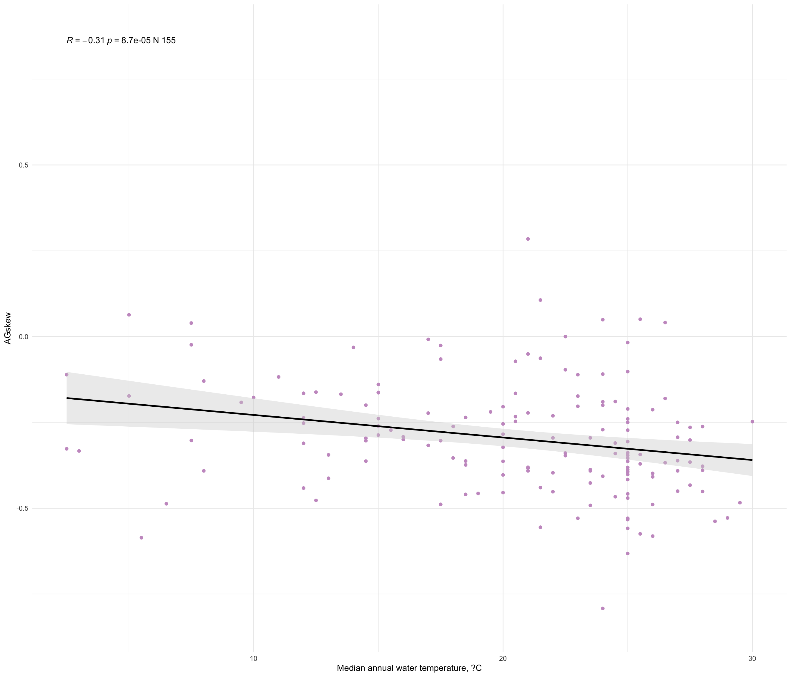

Last updated: 2025-06-06
Checks: 7 0
Knit directory:
TemperatureEffectsOnMtDNAspectra/
This reproducible R Markdown analysis was created with workflowr (version 1.7.1). The Checks tab describes the reproducibility checks that were applied when the results were created. The Past versions tab lists the development history.
Great! Since the R Markdown file has been committed to the Git repository, you know the exact version of the code that produced these results.
Great job! The global environment was empty. Objects defined in the global environment can affect the analysis in your R Markdown file in unknown ways. For reproduciblity it’s best to always run the code in an empty environment.
The command set.seed(20240719) was run prior to running
the code in the R Markdown file. Setting a seed ensures that any results
that rely on randomness, e.g. subsampling or permutations, are
reproducible.
Great job! Recording the operating system, R version, and package versions is critical for reproducibility.
Nice! There were no cached chunks for this analysis, so you can be confident that you successfully produced the results during this run.
Great job! Using relative paths to the files within your workflowr project makes it easier to run your code on other machines.
Great! You are using Git for version control. Tracking code development and connecting the code version to the results is critical for reproducibility.
The results in this page were generated with repository version 3359d51. See the Past versions tab to see a history of the changes made to the R Markdown and HTML files.
Note that you need to be careful to ensure that all relevant files for
the analysis have been committed to Git prior to generating the results
(you can use wflow_publish or
wflow_git_commit). workflowr only checks the R Markdown
file, but you know if there are other scripts or data files that it
depends on. Below is the status of the Git repository when the results
were generated:
Ignored files:
Ignored: .DS_Store
Ignored: .Rhistory
Ignored: .Rproj.user/
Ignored: analysis/.DS_Store
Ignored: analysis/.RData
Ignored: analysis/.Rhistory
Ignored: code/.DS_Store
Ignored: data/.DS_Store
Ignored: data/Codons_of_CytB_gene_Chordata.txt
Ignored: data/ColdAndWarmFishesSpectra.txt
Ignored: data/Dataset_S1.csv
Ignored: data/ExpectedFractions.txt
Ignored: data/Extra_climate_data_2025.csv
Ignored: data/Extra_temperature_grow_data_2025.csv
Ignored: data/Extra_temperature_popQB_data_2025.csv
Ignored: data/Full_fish_ecology_table_2025.csv
Ignored: data/MIDORI2_LONGEST_NUC_GB265_Cytb_BLAST.fasta
Ignored: data/MIDORI2_LONGEST_NUC_GB265_Cytb_BLAST.fasta.fai
Ignored: data/MIDORI_WG_CYTB_FISHES.csv
Ignored: data/SimulationData.csv
Ignored: output/.DS_Store
Ignored: output/tables/
Note that any generated files, e.g. HTML, png, CSS, etc., are not included in this status report because it is ok for generated content to have uncommitted changes.
These are the previous versions of the repository in which changes were
made to the R Markdown (analysis/II_Cytb_Data_Analysis.Rmd)
and HTML (docs/II_Cytb_Data_Analysis.html) files. If you’ve
configured a remote Git repository (see ?wflow_git_remote),
click on the hyperlinks in the table below to view the files as they
were in that past version.
| File | Version | Author | Date | Message |
|---|---|---|---|---|
| Rmd | 3359d51 | Alya Mikhailova | 2025-06-06 | Analyses of neutral nuc content only on CYT B |
mtDNAcodonUsage <- read.table(here(data_dir, "Codons_of_CytB_gene_Chordata.txt"), header = TRUE)
mtDNAcodonUsage = mtDNAcodonUsage[mtDNAcodonUsage$Class == 'Actinopteri' | mtDNAcodonUsage$Class == 'Chondrichthyes',]
mtDNAcodonUsage = aggregate(list(mtDNAcodonUsage$NeutralA,mtDNAcodonUsage$NeutralT,mtDNAcodonUsage$NeutralG,mtDNAcodonUsage$NeutralC), by = list(mtDNAcodonUsage$Species), FUN = sum)
names(mtDNAcodonUsage) = c('Species','NeutralA','NeutralT','NeutralG','NeutralC')
mtDNAcodonUsage$FrT.H = mtDNAcodonUsage$NeutralA / (mtDNAcodonUsage$NeutralA + mtDNAcodonUsage$NeutralT +
mtDNAcodonUsage$NeutralG + mtDNAcodonUsage$NeutralC)
mtDNAcodonUsage$FrA.H = mtDNAcodonUsage$NeutralT / (mtDNAcodonUsage$NeutralA + mtDNAcodonUsage$NeutralT +
mtDNAcodonUsage$NeutralG + mtDNAcodonUsage$NeutralC)
mtDNAcodonUsage$FrC.H = mtDNAcodonUsage$NeutralG / (mtDNAcodonUsage$NeutralA + mtDNAcodonUsage$NeutralT +
mtDNAcodonUsage$NeutralG + mtDNAcodonUsage$NeutralC)
mtDNAcodonUsage$FrG.H = mtDNAcodonUsage$NeutralC / (mtDNAcodonUsage$NeutralA + mtDNAcodonUsage$NeutralT +
mtDNAcodonUsage$NeutralG + mtDNAcodonUsage$NeutralC)
head(mtDNAcodonUsage) Species NeutralA NeutralT NeutralG NeutralC FrT.H
1 Aaptosyax_grypus 125 18 9 42 0.6443299
2 Abantennarius_coccineus 67 56 14 64 0.3333333
3 Abbottina_lalinensis 107 30 22 45 0.5245098
4 Abbottina_liaoningensis 100 28 21 54 0.4926108
5 Abudefduf_caudobimaculatus 68 27 8 75 0.3820225
6 Abudefduf_concolor 79 34 9 86 0.3798077
FrA.H FrC.H FrG.H
1 0.09278351 0.04639175 0.2164948
2 0.27860697 0.06965174 0.3184080
3 0.14705882 0.10784314 0.2205882
4 0.13793103 0.10344828 0.2660099
5 0.15168539 0.04494382 0.4213483
6 0.16346154 0.04326923 0.4134615fishEcology <- read.csv(here(data_dir, "Full_fish_ecology_table_2025.csv"))
head(fishEcology) Species Wmax Lmax tmax
1 Abbottina_rivularis NA 9.10000 2.00000
2 Abramis_brama 4112.167 46.91111 14.41667
3 Abudefduf_vaigiensis NA 18.96667 NA
4 Acanthemblemaria_aspera NA 3.00000 4.00000
5 Acanthocybium_solandri 7200.000 177.88000 9.30000
6 Acanthopagrus_berda 660.000 56.00000 12.50000
FeedingType FoodTroph tm Lm Temp_min Temp_max
1 <NA> NA 1.000 4.50000 NA NA
2 hunting macrofauna (predator) 3.15 4.125 28.75000 10 24
3 grazing on aquatic plants 3.39 NA 12.00000 NA NA
4 hunting macrofauna (predator) 3.12 NA NA NA NA
5 hunting macrofauna (predator) 4.45 2.000 99.33333 NA NA
6 hunting macrofauna (predator) 3.50 NA 21.00000 NA NA
Climate_zone Temp_avg
1 subtropical NA
2 temperate 17
3 tropical NA
4 <NA> NA
5 subtropical NA
6 tropical NA##Correlating neutral nucleotide content and nucleotide skews with temperature
merging <- list(mtDNAcodonUsage, fishEcology)
NucAndEco <- merging %>% purrr::reduce(left_join, by= "Species")
taxonomy <- rfishbase::species_names()
taxonomy$Species <- gsub(" ", "_", taxonomy$Species)
NucAndEco <- merge(NucAndEco, taxonomy, by="Species", all.x = TRUE)
spN <- nrow(NucAndEco[!is.na(NucAndEco$Temp_avg),])
spN[1] 155tidy(cor.test(NucAndEco$FrA.H, NucAndEco$Temp_avg, method = 'spearman'))# A tibble: 1 × 5
estimate statistic p.value method alternative
<dbl> <dbl> <dbl> <chr> <chr>
1 -0.161 720498. 0.0455 Spearman's rank correlation rho two.sided tidy(cor.test(NucAndEco$FrG.H, NucAndEco$Temp_avg, method = 'spearman'))# A tibble: 1 × 5
estimate statistic p.value method alternative
<dbl> <dbl> <dbl> <chr> <chr>
1 0.347 405197. 0.00000965 Spearman's rank correlation rho two.sided tidy(cor.test(NucAndEco$FrT.H, NucAndEco$Temp_avg, method = 'spearman'))# A tibble: 1 × 5
estimate statistic p.value method alternative
<dbl> <dbl> <dbl> <chr> <chr>
1 -0.0694 663682. 0.391 Spearman's rank correlation rho two.sided tidy(cor.test(NucAndEco$FrC.H, NucAndEco$Temp_avg, method = 'spearman')) #tree?# A tibble: 1 × 5
estimate statistic p.value method alternative
<dbl> <dbl> <dbl> <chr> <chr>
1 -0.412 876403. 0.0000000991 Spearman's rank correlation rho two.sided NucAndEco$AGskew <- (NucAndEco$FrA.H - NucAndEco$FrG.H)/(NucAndEco$FrG.H + NucAndEco$FrA.H)
NucAndEco$CTskew <- (NucAndEco$FrC.H - NucAndEco$FrT.H)/(NucAndEco$FrT.H + NucAndEco$FrC.H)
tidy(cor.test(NucAndEco$AGskew, NucAndEco$Temp_avg, method = 'spearman'))# A tibble: 1 × 5
estimate statistic p.value method alternative
<dbl> <dbl> <dbl> <chr> <chr>
1 -0.310 812966. 0.0000870 Spearman's rank correlation rho two.sided tidy(cor.test(NucAndEco$CTskew, NucAndEco$Temp_avg, method = 'spearman'))# A tibble: 1 × 5
estimate statistic p.value method alternative
<dbl> <dbl> <dbl> <chr> <chr>
1 -0.330 825338. 0.0000277 Spearman's rank correlation rho two.sided ##Correlating neutral nucleotide content and nucleotide skews with time of maturation
nrow(NucAndEco[!is.na(NucAndEco$tm),])[1] 38tidy(cor.test(NucAndEco$FrA.H, NucAndEco$tm, method = 'spearman'))# A tibble: 1 × 5
estimate statistic p.value method alternative
<dbl> <dbl> <dbl> <chr> <chr>
1 0.100 8223. 0.549 Spearman's rank correlation rho two.sided tidy(cor.test(NucAndEco$FrG.H, NucAndEco$tm, method = 'spearman'))# A tibble: 1 × 5
estimate statistic p.value method alternative
<dbl> <dbl> <dbl> <chr> <chr>
1 -0.236 11292. 0.155 Spearman's rank correlation rho two.sided tidy(cor.test(NucAndEco$FrT.H, NucAndEco$tm, method = 'spearman'))# A tibble: 1 × 5
estimate statistic p.value method alternative
<dbl> <dbl> <dbl> <chr> <chr>
1 0.114 8095. 0.495 Spearman's rank correlation rho two.sided tidy(cor.test(NucAndEco$FrC.H, NucAndEco$tm, method = 'spearman'))# A tibble: 1 × 5
estimate statistic p.value method alternative
<dbl> <dbl> <dbl> <chr> <chr>
1 -0.210 11054. 0.207 Spearman's rank correlation rho two.sided sf4 <- ggplot(NucAndEco, aes(x=Temp_avg, y=AGskew)) +
geom_point(color="#c99bc9") + # Scatter plot
geom_smooth(method = "lm", color = "black", # Regression line + CI
fill = "lightgray", se = TRUE) + # Set se=TRUE for confidence interval
stat_cor(method = "spearman", # Spearman correlation stats
aes(label = paste(..r.label.., ..p.label.., "N", spN, sep = "~"))) + # Include n
labs(x = "Median annual water temperature, ?C", y = "AGskew") + # Axis labels
theme_minimal() # Theme customization
#ggsave(here(plots_dir,".pdf"),
# plot = f1b,
# width = 6,
# height = 6
#)
sf4
##LM
summary(lm(AGskew ~ Temp_avg + tm, data = NucAndEco))
Call:
lm(formula = AGskew ~ Temp_avg + tm, data = NucAndEco)
Residuals:
Min 1Q Median 3Q Max
-0.23660 -0.10646 -0.01631 0.08601 0.32678
Coefficients:
Estimate Std. Error t value Pr(>|t|)
(Intercept) -0.100517 0.130019 -0.773 0.4501
Temp_avg -0.011873 0.006556 -1.811 0.0879 .
tm 0.018165 0.014415 1.260 0.2246
---
Signif. codes: 0 '***' 0.001 '**' 0.01 '*' 0.05 '.' 0.1 ' ' 1
Residual standard error: 0.1457 on 17 degrees of freedom
(2899 observations deleted due to missingness)
Multiple R-squared: 0.3099, Adjusted R-squared: 0.2288
F-statistic: 3.818 on 2 and 17 DF, p-value: 0.04271summary(lm(CTskew ~ Temp_avg + tm, data = NucAndEco))
Call:
lm(formula = CTskew ~ Temp_avg + tm, data = NucAndEco)
Residuals:
Min 1Q Median 3Q Max
-0.20285 -0.04017 -0.01161 0.07389 0.25120
Coefficients:
Estimate Std. Error t value Pr(>|t|)
(Intercept) -0.593544 0.112721 -5.266 6.31e-05 ***
Temp_avg -0.001527 0.005684 -0.269 0.791
tm -0.018057 0.012497 -1.445 0.167
---
Signif. codes: 0 '***' 0.001 '**' 0.01 '*' 0.05 '.' 0.1 ' ' 1
Residual standard error: 0.1263 on 17 degrees of freedom
(2899 observations deleted due to missingness)
Multiple R-squared: 0.1133, Adjusted R-squared: 0.009014
F-statistic: 1.086 on 2 and 17 DF, p-value: 0.3597summary(lm(FrA.H ~ Temp_avg + tm, data = NucAndEco))
Call:
lm(formula = FrA.H ~ Temp_avg + tm, data = NucAndEco)
Residuals:
Min 1Q Median 3Q Max
-0.07102 -0.02677 -0.01023 0.04017 0.06553
Coefficients:
Estimate Std. Error t value Pr(>|t|)
(Intercept) 0.279676 0.040396 6.923 2.46e-06 ***
Temp_avg -0.004482 0.002037 -2.200 0.0419 *
tm -0.000667 0.004479 -0.149 0.8834
---
Signif. codes: 0 '***' 0.001 '**' 0.01 '*' 0.05 '.' 0.1 ' ' 1
Residual standard error: 0.04527 on 17 degrees of freedom
(2899 observations deleted due to missingness)
Multiple R-squared: 0.24, Adjusted R-squared: 0.1505
F-statistic: 2.684 on 2 and 17 DF, p-value: 0.09707summary(lm(FrG.H ~ Temp_avg + tm, data = NucAndEco))
Call:
lm(formula = FrG.H ~ Temp_avg + tm, data = NucAndEco)
Residuals:
Min 1Q Median 3Q Max
-0.149634 -0.025538 -0.005381 0.026992 0.118764
Coefficients:
Estimate Std. Error t value Pr(>|t|)
(Intercept) 0.319361 0.062172 5.137 8.24e-05 ***
Temp_avg 0.003707 0.003135 1.183 0.2533
tm -0.013499 0.006893 -1.958 0.0668 .
---
Signif. codes: 0 '***' 0.001 '**' 0.01 '*' 0.05 '.' 0.1 ' ' 1
Residual standard error: 0.06968 on 17 degrees of freedom
(2899 observations deleted due to missingness)
Multiple R-squared: 0.3225, Adjusted R-squared: 0.2428
F-statistic: 4.045 on 2 and 17 DF, p-value: 0.03655tree = read.tree(file = here(data_dir, "chordates_species.nwk"))
tree <- ape::drop.tip(tree, "Tenebrosternarchus_preto")
NucAndEcoPGLS <- NucAndEco %>% dplyr::select(Species, FrA.H, FrG.H, FrT.H, FrC.H, AGskew, CTskew, Temp_avg)
NucAndEcoPGLS <- NucAndEcoPGLS[!is.na(NucAndEcoPGLS$Temp_avg),]
row.names(NucAndEcoPGLS) = NucAndEcoPGLS$Species
tree_pruned = treedata(tree, NucAndEcoPGLS, sort=T, warnings=T)$phy
data<-as.data.frame(treedata(tree_pruned, NucAndEcoPGLS, sort=T, warnings=T)$data)
data$Species = as.character(data$Species)
data$FrA.H = as.numeric(data$FrA.H)
data$FrG.H = as.numeric(data$FrG.H)
data$FrT.H = as.numeric(data$FrT.H)
data$FrC.H = as.numeric(data$FrC.H)
data$AGskew = as.numeric(data$AGskew)
data$CTskew = as.numeric(data$CTskew)
data$Temp_avg = as.numeric(data$Temp_avg)
data_comp <- comparative.data(tree_pruned, data, Species, vcv=TRUE)
if (exists("tree_pruned") && inherits(tree_pruned, "phylo")) {
# Check for zero-length branches
num_zero_branches <- sum(tree_pruned$edge.length == 0)
cat("Number of zero-length branches in tree_pruned:", num_zero_branches, "\n")
if (num_zero_branches > 0) {
cat("Some branch lengths are exactly zero.\n")
}
# Check for very small branch lengths (can also cause numerical instability)
min_branch_length <- min(tree_pruned$edge.length[tree_pruned$edge.length > 0]) # Smallest non-zero
cat("Smallest non-zero branch length:", min_branch_length, "\n")
cat("Number of branches < 1e-8 (a very small number):", sum(tree_pruned$edge.length < 1e-8), "\n")
# Check if the tree is binary (no polytomies)
is_binary_tree <- is.binary(tree_pruned)
cat("Is tree_pruned binary (no polytomies)?", is_binary_tree, "\n")
if (!is_binary_tree) {
cat("Tree_pruned contains polytomies.\n")
}
# Basic tree summary
# summary(tree_pruned) # Provides a general overview
} else {
cat("The 'tree_pruned' object doesn't exist or is not a valid phylo object.\n")
}Number of zero-length branches in tree_pruned: 5
Some branch lengths are exactly zero.
Smallest non-zero branch length: 0.12958
Number of branches < 1e-8 (a very small number): 5
Is tree_pruned binary (no polytomies)? TRUE if (exists("tree_pruned") && inherits(tree_pruned, "phylo")) {
if(any(tree_pruned$edge.length == 0)) {
cat("Adding a tiny value to zero-length branches...\n")
tree_pruned$edge.length[tree_pruned$edge.length == 0] <- 1e-8 # Or a similar small value
# After this, you would need to recreate data_comp with the modified tree_pruned
data_comp <- comparative.data(tree_pruned, data, Species, vcv=TRUE)
}
}Adding a tiny value to zero-length branches...summary(pgls(FrA.H ~ Temp_avg, data_comp, lambda="ML"))
Call:
pgls(formula = FrA.H ~ Temp_avg, data = data_comp, lambda = "ML")
Residuals:
Min 1Q Median 3Q Max
-0.0091530 -0.0028446 0.0000803 0.0023018 0.0144948
Branch length transformations:
kappa [Fix] : 1.000
lambda [ ML] : 0.935
lower bound : 0.000, p = < 2.22e-16
upper bound : 1.000, p = 8.4e-08
95.0% CI : (0.835, 0.978)
delta [Fix] : 1.000
Coefficients:
Estimate Std. Error t value Pr(>|t|)
(Intercept) 0.23603912 0.04917936 4.7996 4.13e-06 ***
Temp_avg -0.00260784 0.00090797 -2.8722 0.004731 **
---
Signif. codes: 0 '***' 0.001 '**' 0.01 '*' 0.05 '.' 0.1 ' ' 1
Residual standard error: 0.004399 on 136 degrees of freedom
Multiple R-squared: 0.05719, Adjusted R-squared: 0.05026
F-statistic: 8.249 on 1 and 136 DF, p-value: 0.004731 summary(pgls(AGskew ~ Temp_avg, data_comp, lambda="ML"))
Call:
pgls(formula = AGskew ~ Temp_avg, data = data_comp, lambda = "ML")
Residuals:
Min 1Q Median 3Q Max
-0.033753 -0.008642 0.000003 0.009380 0.039432
Branch length transformations:
kappa [Fix] : 1.000
lambda [ ML] : 0.960
lower bound : 0.000, p = 2.0106e-08
upper bound : 1.000, p = 0.00014831
95.0% CI : (0.875, 0.991)
delta [Fix] : 1.000
Coefficients:
Estimate Std. Error t value Pr(>|t|)
(Intercept) -0.1641418 0.1724461 -0.9518 0.34286
Temp_avg -0.0062934 0.0029675 -2.1208 0.03575 *
---
Signif. codes: 0 '***' 0.001 '**' 0.01 '*' 0.05 '.' 0.1 ' ' 1
Residual standard error: 0.01538 on 136 degrees of freedom
Multiple R-squared: 0.03201, Adjusted R-squared: 0.0249
F-statistic: 4.498 on 1 and 136 DF, p-value: 0.03575 summary(pgls(FrG.H ~ Temp_avg, data_comp, lambda="ML"))
Call:
pgls(formula = FrG.H ~ Temp_avg, data = data_comp, lambda = "ML")
Residuals:
Min 1Q Median 3Q Max
-0.023114 -0.004291 0.000034 0.003814 0.016762
Branch length transformations:
kappa [Fix] : 1.000
lambda [ ML] : 0.994
lower bound : 0.000, p = < 2.22e-16
upper bound : 1.000, p = 0.21532
95.0% CI : (0.960, NA)
delta [Fix] : 1.000
Coefficients:
Estimate Std. Error t value Pr(>|t|)
(Intercept) 0.31426298 0.07501831 4.1892 5.007e-05 ***
Temp_avg 0.00073077 0.00105724 0.6912 0.4906
---
Signif. codes: 0 '***' 0.001 '**' 0.01 '*' 0.05 '.' 0.1 ' ' 1
Residual standard error: 0.006697 on 136 degrees of freedom
Multiple R-squared: 0.003501, Adjusted R-squared: -0.003826
F-statistic: 0.4778 on 1 and 136 DF, p-value: 0.4906 summary(pgls(FrT.H ~ Temp_avg, data_comp, lambda="ML"))
Call:
pgls(formula = FrT.H ~ Temp_avg, data = data_comp, lambda = "ML")
Residuals:
Min 1Q Median 3Q Max
-0.0150769 -0.0038058 -0.0004167 0.0031793 0.0175736
Branch length transformations:
kappa [Fix] : 1.000
lambda [ ML] : 0.978
lower bound : 0.000, p = < 2.22e-16
upper bound : 1.000, p = 0.00018915
95.0% CI : (0.935, 0.994)
delta [Fix] : 1.000
Coefficients:
Estimate Std. Error t value Pr(>|t|)
(Intercept) 0.3722726 0.0699717 5.3203 4.154e-07 ***
Temp_avg 0.0028565 0.0011120 2.5688 0.01128 *
---
Signif. codes: 0 '***' 0.001 '**' 0.01 '*' 0.05 '.' 0.1 ' ' 1
Residual standard error: 0.006235 on 136 degrees of freedom
Multiple R-squared: 0.04628, Adjusted R-squared: 0.03926
F-statistic: 6.599 on 1 and 136 DF, p-value: 0.01128 summary(pgls(FrC.H ~ Temp_avg, data_comp, lambda="ML"))
Call:
pgls(formula = FrC.H ~ Temp_avg, data = data_comp, lambda = "ML")
Residuals:
Min 1Q Median 3Q Max
-0.0044778 -0.0015294 -0.0002443 0.0013845 0.0058875
Branch length transformations:
kappa [Fix] : 1.000
lambda [ ML] : 0.870
lower bound : 0.000, p = 8.8105e-08
upper bound : 1.000, p = 6.0131e-10
95.0% CI : (0.691, 0.952)
delta [Fix] : 1.000
Coefficients:
Estimate Std. Error t value Pr(>|t|)
(Intercept) 0.08017764 0.02429038 3.3008 0.001231 **
Temp_avg -0.00114124 0.00050771 -2.2478 0.026197 *
---
Signif. codes: 0 '***' 0.001 '**' 0.01 '*' 0.05 '.' 0.1 ' ' 1
Residual standard error: 0.0022 on 136 degrees of freedom
Multiple R-squared: 0.03582, Adjusted R-squared: 0.02873
F-statistic: 5.053 on 1 and 136 DF, p-value: 0.0262 summary(pgls(CTskew ~ Temp_avg, data_comp, lambda="ML"))
Call:
pgls(formula = CTskew ~ Temp_avg, data = data_comp, lambda = "ML")
Residuals:
Min 1Q Median 3Q Max
-0.018477 -0.006430 -0.001334 0.006453 0.027396
Branch length transformations:
kappa [Fix] : 1.000
lambda [ ML] : 0.800
lower bound : 0.000, p = 8.8461e-06
upper bound : 1.000, p = 9.992e-16
95.0% CI : (0.555, 0.917)
delta [Fix] : 1.000
Coefficients:
Estimate Std. Error t value Pr(>|t|)
(Intercept) -0.6325852 0.1025475 -6.1687 7.383e-09 ***
Temp_avg -0.0065885 0.0023503 -2.8033 0.005799 **
---
Signif. codes: 0 '***' 0.001 '**' 0.01 '*' 0.05 '.' 0.1 ' ' 1
Residual standard error: 0.009447 on 136 degrees of freedom
Multiple R-squared: 0.05462, Adjusted R-squared: 0.04767
F-statistic: 7.858 on 1 and 136 DF, p-value: 0.005799
sessionInfo()R version 4.5.0 (2025-04-11)
Platform: aarch64-apple-darwin20
Running under: macOS Sequoia 15.5
Matrix products: default
BLAS: /Library/Frameworks/R.framework/Versions/4.5-arm64/Resources/lib/libRblas.0.dylib
LAPACK: /Library/Frameworks/R.framework/Versions/4.5-arm64/Resources/lib/libRlapack.dylib; LAPACK version 3.12.1
locale:
[1] en_US.UTF-8/en_US.UTF-8/en_US.UTF-8/C/en_US.UTF-8/en_US.UTF-8
time zone: Europe/Vienna
tzcode source: internal
attached base packages:
[1] stats graphics grDevices utils datasets methods base
other attached packages:
[1] rfishbase_5.0.1 ggstatsplot_0.13.1 broom_1.0.8 ggpubr_0.6.0
[5] ggExtra_0.10.1 geiger_2.0.11 phytools_2.4-4 maps_3.4.3
[9] caper_1.0.3 mvtnorm_1.3-3 MASS_7.3-65 ape_5.8-1
[13] magrittr_2.0.3 lubridate_1.9.4 forcats_1.0.0 stringr_1.5.1
[17] dplyr_1.1.4 purrr_1.0.4 readr_2.1.5 tidyr_1.3.1
[21] tibble_3.2.1 ggplot2_3.5.2 tidyverse_2.0.0 knitr_1.50
[25] here_1.0.1 workflowr_1.7.1
loaded via a namespace (and not attached):
[1] RColorBrewer_1.1-3 rstudioapi_0.17.1 jsonlite_2.0.0
[4] datawizard_1.1.0 correlation_0.8.7 subplex_1.9
[7] estimability_1.5.1 farver_2.1.2 rmarkdown_2.29
[10] fs_1.6.6 vctrs_0.6.5 memoise_2.0.1
[13] paletteer_1.6.0 effectsize_1.0.1 rstatix_0.7.2
[16] htmltools_0.5.8.1 curl_6.2.3 DEoptim_2.2-8
[19] deSolve_1.40 Formula_1.2-5 sass_0.4.10
[22] bslib_0.9.0 emmeans_1.11.1 cachem_1.1.0
[25] whisker_0.4.1 igraph_2.1.4 mime_0.13
[28] lifecycle_1.0.4 iterators_1.0.14 pkgconfig_2.0.3
[31] Matrix_1.7-3 R6_2.6.1 fastmap_1.2.0
[34] shiny_1.10.0 digest_0.6.37 numDeriv_2016.8-1.1
[37] rematch2_2.1.2 patchwork_1.3.0 ps_1.9.1
[40] rprojroot_2.0.4 labeling_0.4.3 clusterGeneration_1.3.8
[43] timechange_0.3.0 httr_1.4.7 abind_1.4-8
[46] mgcv_1.9-3 compiler_4.5.0 withr_3.0.2
[49] doParallel_1.0.17 duckdbfs_0.1.0 backports_1.5.0
[52] optimParallel_1.0-2 carData_3.0-5 DBI_1.2.3
[55] duckdb_1.3.0 ggsignif_0.6.4 scatterplot3d_0.3-44
[58] tools_4.5.0 httpuv_1.6.16 statsExpressions_1.7.0
[61] glue_1.8.0 quadprog_1.5-8 callr_3.7.6
[64] nlme_3.1-168 promises_1.3.3 grid_4.5.0
[67] getPass_0.2-4 generics_0.1.4 gtable_0.3.6
[70] tzdb_0.5.0 hms_1.1.3 car_3.1-3
[73] utf8_1.2.5 foreach_1.5.2 pillar_1.10.2
[76] later_1.4.2 splines_4.5.0 lattice_0.22-7
[79] tidyselect_1.2.1 miniUI_0.1.2 git2r_0.36.2
[82] xfun_0.52 expm_1.0-0 stringi_1.8.7
[85] yaml_2.3.10 evaluate_1.0.3 codetools_0.2-20
[88] cli_3.6.5 RcppParallel_5.1.10 xtable_1.8-4
[91] parameters_0.26.0 processx_3.8.6 jquerylib_0.1.4
[94] Rcpp_1.0.14 zeallot_0.2.0 dbplyr_2.5.0
[97] coda_0.19-4.1 parallel_4.5.0 rstantools_2.4.0
[100] blob_1.2.4 bayestestR_0.16.0 phangorn_2.12.1
[103] scales_1.4.0 insight_1.3.0 combinat_0.0-8
[106] rlang_1.1.6 fastmatch_1.1-6 mnormt_2.1.1